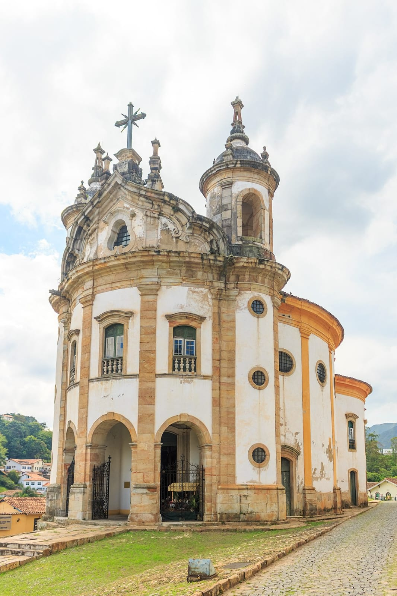

Onde surgiu?
O que é?
Principais autores
Obras barrocas
Barroco
Trabalho sobre a escola literária barroca
Obras Barrocas
Obra de Eusébio de Matos e Guerra, 'Postilhão de Apolo'.
Jesus carrega a cruz, uma obra-prima de Aleijadinho.
Profeta Daniel, por Aleijadinho.
Igrejas Barrocas
Igreja de Nossa Senhora do Rosário dos Homens Pretos
Igreja de São Francisco de Assis, Ouro Preto.
Igreja Matriz de Nossa Senhora do Pilar
 Obra de Eusébio de Matos e Guerra, 'Postilhão de Apolo'.Obra de Eusébio de Matos e Guerra, 'Postilhão de Apolo'.
Obra de Eusébio de Matos e Guerra, 'Postilhão de Apolo'.Obra de Eusébio de Matos e Guerra, 'Postilhão de Apolo'.